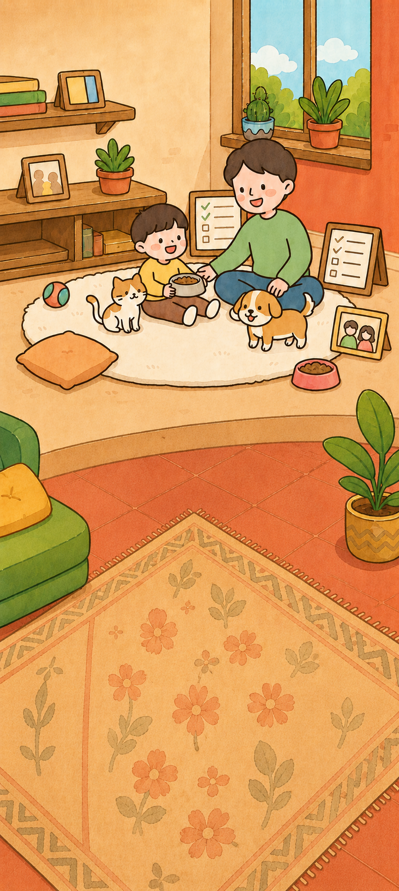
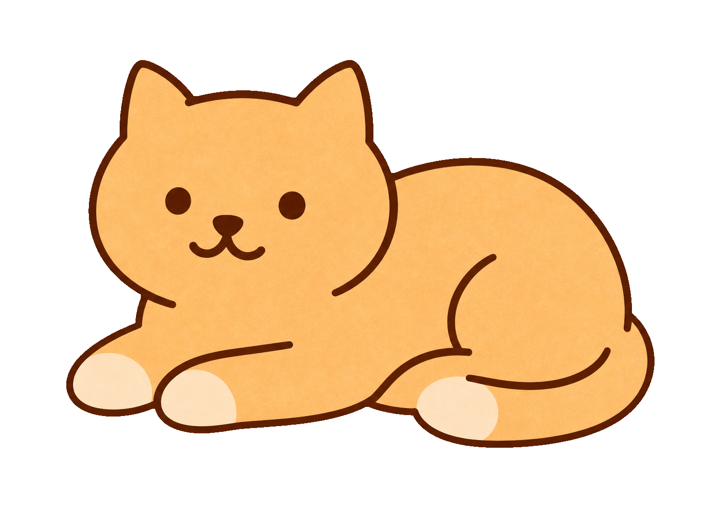
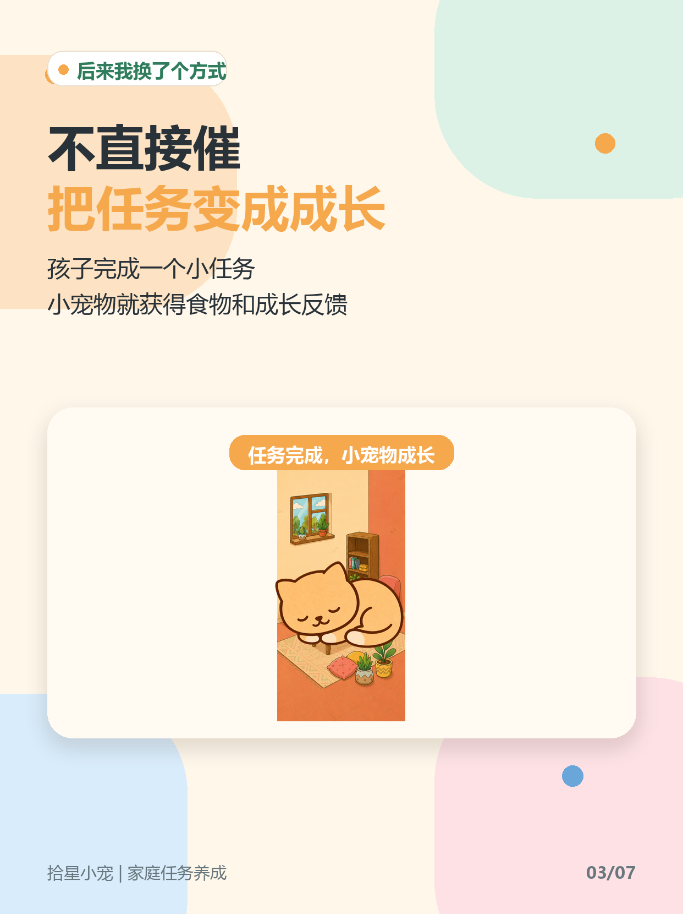
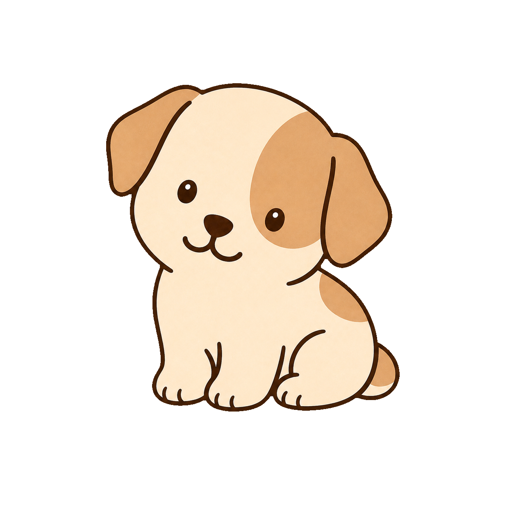
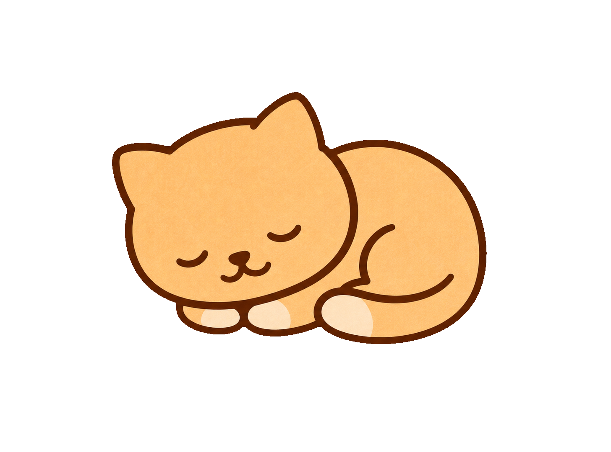
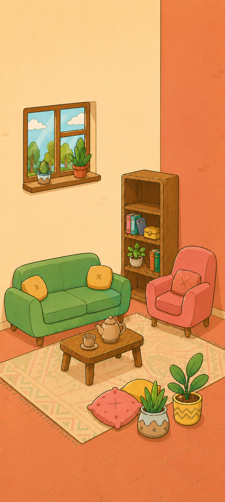

直接催、反复说
大人越说越累，孩子越听越烦，日常小事变成情绪对抗。
- 「快点收！怎么还不动？」
- 完成了也没什么感觉
- 习惯很难长期坚持
不想每天催孩子收玩具？把「收玩具、刷牙、阅读」变成小任务。 完成后喂给小宠物，习惯养成更轻松，亲子关系更柔软。


很多家庭不是不努力，而是缺少一个「完成之后立刻有反馈」的小闭环。
大人越说越累，孩子越听越烦，日常小事变成情绪对抗。
把小目标变成可完成的任务，孩子马上看到反馈，更愿意主动做。

不必一次安排很多。像「收玩具 10 分钟」这样的小目标，最容易坚持。
家长注册并建立家庭组，为孩子添加成员，一起选一只可爱的小宠物。

设置任务内容和积分，例如收玩具、刷牙、阅读、按时睡觉、简单家务。
孩子完成并提交，家长确认，积分喂给宠物。看着它升级，全家人都开心。

家长负责引导与确认，孩子负责行动与成长，宠物是中间那份温柔的反馈。

管理员创建家庭、添加孩子成员。每个成员可以有自己的宠物，成长进度清晰可见。
提交后由家长确认再加分。既有即时反馈，也保留家长引导权。
积分达标自动升级，形态变化成为孩子最有动力的小目标。
也可以设置大人任务，让家庭协作更平等——互相进步，而不是单向催促。
不必追求完美清单。先选一个家里最头疼的小任务，做通了再慢慢扩展。
计时 10 分钟，完成后立刻喂宠物，比反复催促更有效。
把早晚固定动作变成可打卡的小任务，建立节奏感。
每天读几页、听一个故事，用成长值鼓励持续坚持。
把「上床时间」变成可完成目标，减少睡前拉扯。
擦桌子、放碗筷……让孩子参与家庭，也获得被看见的反馈。
先完成「打开书包 / 坐到书桌前」这类启动任务，降低拖延。